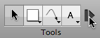
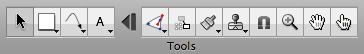

Tipps zur Werkzeugpalette
Zu-/Aufklapp-Technik


OmniGraffle 5 verwendet eine innovative Zu-/Aufklapp-Technik. Neben dem Textwerkzeug befindet sich standardmäßig eine Taste, mit der Sie durch Anklicken die Werkzeugpalette auf die Objekte ganz links reduzieren können. Auf diese Weise sparen Sie wertvollen Platz für andere Tasten. Sie können die Palette jederzeit wieder auf die volle Größe erweitern, wenn Sie Zugriff auf die übrigen Werkzeuge benötigen.
Sie können die Trennlinie in den Programmeinstellungen für Zeichenwerkzeuge verschieben, um festzulegen, welche Werkzeuge auf der reduzierten Palette verfügbar sein sollen. Die Erweiterungstaste kann auch ganz entfernt werden.
Dauerhafte Werkzeugaktivierung
Standardmäßig wird ein Werkzeug durch Einmalklicken für die einmalige Verwendung aktiviert. Danach wird wieder das Auswahlwerkzeug aktiviert. Ein kleines dunkelblaues Symbol "1" wird auf dem Werkzeug eingeblendet, um hierauf hinzuweisen. 
Wenn Sie ein Werkzeug dauerhaft aktivieren wollen, klicken Sie erneut hinein. Das Symbol wird ausgeblendet, um anzuzeigen, dass das Werkzeug aktiv bleibt, bis Sie ein anderes auswählen.
Sie können dieses Verhalten in den Programmeinstellungen für Zeichenwerkzeuge ändern, sodass Werkzeuge immer (oder nie) dauerhaft aktiviert sind.
Informationen über ein Werkzeug
Normalerweise werden die Informationsfenster verwendet, um ein ausgewähltes Objekt auf der Arbeitsfläche zu ändern. Sie können sie jedoch auch zum Ändern des Stils der Objekte verwenden, die mit einem bestimmten Werkzeug erstellt werden. Klicken Sie bei gedrückter Wahltaste auf das Form-, Stift-, Linien- oder Textwerkzeug (bzw. klicken Sie einfach darauf, abhängig von Ihren Programmeinstellungen für Zeichenwerkzeuge). Die Werkzeugtaste wird in der von Ihnen gewählten Hervorhebungsfarbe hervorgehoben, um darauf hinzuweisen, dass das Werkzeug im Informationsfenster geöffnet ist. 
Solange das Werkzeug im Informationsfenster geöffnet ist, wird jede Änderung, die Sie vornehmen, auf das Werkzeug selbst angewendet. Wenn Sie beispielsweise die Konturfarbe des Linienwerkzeugs zu Rot ändern, erhält jede damit gezeichnete Linie eine rote Kontur.
Durch Auswahl des Befehls "Standardwerte wiederherstellen" aus dem Einblendmenü des Werkzeugs können Sie jederzeit zu den Originaleinstellungen zurückkehren.
Menüs "Stil"
Form-, Stift-, Linien- und Text-werkzeug verfügen über eigene Stilmenüs. Diese Menüs enthalten verschiedene Stile, die Sie auf das Werkzeug selbst anwenden können. Klicken Sie in das Dreieck in der Ecke der Taste oder klicken Sie und halten Sie die Maustaste gedrückt, um das Kontextmenü zu öffnen. 
Das erste Menüobjekt zeigt den zuletzt von Ihnen verwendeten Stil an.
OmniGraffle Pro umfasst eine Liste mit Stil-Favoriten, zu der Sie Stile hinzufügen können, die Sie nocheinmal verwenden wollen. Sie können frei zwischen dem aktuellen Stil oben im Menü und den Stilen in der Liste mit den Stil-Favoriten wechseln. Wählen Sie "Stil duplizieren", um eine Kopie des ausgewählten Stils zur Liste der Stil-Favoriten hinzuzufügen. Wählen Sie "Stil löschen", um den ausgewählten Stil aus der Liste der Stil-Favoriten zu entfernen. Sie können Stile auch in die Liste der Stil-Favoriten aufnehmen, indem Sie bei gedrückter Taste "ctrl" oder mit der rechten Maustaste in ein Objekt klicken und "Zu Favoriten hinzufügen" auswählen oder indem Sie die Wahltaste gedrückt halten, während Sie ein Objekt auf das Werkzeugsymbol bewegen.
Die Liste "Stile für Arbeitsfläche" zeigt alle Stile, die auf der Arbeitsfläche verfügbar sind. Beim Auswählen eines Stils wird der aktuelle Stil durch diesen ersetzt.
Die Liste Stile für Schablonen zeigt die Stile, die mit der geöffneten Schablone verfügbar sind. Beim Auswählen eines Stils wird der aktuelle Stil durch diesen ersetzt.
Wählen Sie "Stil anpassen", um das Informationsfenster für das Werkzeug zu öffnen, sodass der zugehörige Stil geändert werden kann.
Wählen Sie "Standardwerte wiederherstellen", um die Originaleinstellungen des Werkzeugs wiederherzustellen.
Gleitende Werkzeugpalette
Sie können auf Wunsch ein Werkzeugpalettenfenster öffnen, das von dem in der Symbolleiste getrennt ist. Wählen Sie dazu einfach "Werkzeugpalette" aus dem Menü "Fenster". Ziehen Sie die Ecke der gleitenden Werkzeugpalette, um ihre Form zu verändern, und positionieren Sie das Fenster in der Nähe Ihres Dokumentfensters, um es "magnetisch" daran anzuhängen.
Schneller Zugriff auf die Werkzeuge
Statt mit der Maustaste zu klicken, können Sie auch die Zifferntasten verwenden, um die Werkzeuge zu aktivieren. Die Tasten 1 bis 0 sind von links nach rechts jeweils einem Werkzeug zugeordnet.
Sie können in den Programmeinstellungen für Zeichenwerkzeuge auch Tastaturabkürzungen einrichten.